Programmazione Web
Programmazione Web18/02/2019IntroduzioneLink utiliLinguaggi utilizzatiLato clientLato serverStrumenti utilizzatiEsercitazioniProgramma del corsoStruttura esameTest Scritto 40%Progetto 60%Presentazione ProgettoBibliografiaWEB Application: Schema GeneraleTransito dell'informazioneInformazioni fondamentali in una Applicazione WEB19/02/2018 LAB 01GITVersion Control SystemsLocal Version Control SystemsCentral Version Control SystemsDistributed Version Control SystemsStati GITCreazione e Clonazione RepositoryCreazioneClonazioneBranchesAggiunta Branch NuovoCambio del BranchAggiunta fileConferma versioneModifica dell'ultimo messaggioModifica di più commitUnione di due versioniOttenere nuove modifiche dal serverControllare se ci sono nuove modifiche dal serverInviare le modifiche al serverGitLabGenerare una chiave SSHFornire key pubblica a GitLabFornire le proprie informazioni a GitLabAutenticarsi globalmenteAutenticarsi solo sulla Git Directory corrente25/02/2019Introduzione ai Sistemi DistribuitiSistemi distribuiti: DefinizioneObbiettivi sistemi distribuitiCondivisione delle risorseTrasparenza della distribuzioneApertura verso espansione dei serviziScalabilitàFault ToleranceImplicazioni dei sistemi distribuitiCluster di calcoloDistributed Computing as an UtilityIntroduzione alle socketSockets: DefinizioneComposizione socketIn JAVA:26/02/2019 - LabDisattivare proxy https in gitlabVersioniPackageCreazione del progetto con maven04/03/2019Visualizzazione pagine webStoricamenteCome funziona?Elemento HMTLAttributi HTMLCommenti HTMLPrincipalmenteIntestazioniTipi di carattereCaratteri specialiListeElementi di formattazioneMeta DatiLink interni(ed esterni)FormScript e StyleStandard da utilizzareValidatoreHTML DOMUtilizzo:CSSSintassiCascadingTipi di elementoPer gestire un elemento all'interno di un elementoGestire più di un elementoPseudo SelettoriColoriLarghezze e percentualiComposizione di un BoxTesto: FontTesto: SpacingLayout delle pagineMobile First Pages05/03/2019-Laboratorio11/03/2019Web ArchitecturesArchitetture multi-tierVersione di baseWeb BrowserWeb ServerHTMLURI e URLMailto URIHTTPMessaggio di request:HTTP e HTTPSCertificati HTTPS: TipiValiditàWeb Arch: EstensioniCGIApplication ServerArchitetture multi-tierNetwork e architetture distribuiteSOAWeb ServicesCloud Computing12/03/2019- Laboratorio25/03/2019Cookies e Sessioni:Session state informationCookiesServlet Cookies APIOttenere i cookiesAggiungere un cookieSession ManagementAccedere ai dati di sessioneMetodi HttpSessionScadenza SessioniCookie di terze partiCookies: rischiSoluzioniURL Rewriting: ServletRequest DispatcherMetodiPassare i datiSession tracking remoto e localeFiltriSchema di funzionamento Filtro in ingressoFiltro in uscitaSchema logicoIpotesi di utilizzo26/03/2019 - Laboratorio01/04/2019ListenerDatabase nelle App WebTipi di databaseDatabase SQLDatabase NoSQLSchemi dinamiciVarietà dei datiCluster ad alta AvaliabilityOpen SourceNon dipendenza da SQLTipi di NoSQLKey-Value data modelColumn OrientedDocument Oriented Graph DatabaseProblemi NoSQLJDBCArchitetturaMicrosoft CLI ODBCTransactionSchema classi JavaStep di uso per DBApache Derby02/04/2019 - Laboratorio
18/02/2019
Introduzione
L'obbiettivo del corso è avere un contenuto Web scalabile e accessibile da chiunque.
Link utili
Linguaggi utilizzati
Lato client
- JS
- HTML
- CSS
- Framework(Bootstrap)
Lato server
- Database
- Java Servlet
Strumenti utilizzati
Netbeans/IntellJ
Tomcat/GlassFish (Server Side)
Database Relazionale
- Derby
- PostgreSQL
- MySQL
GIT e Version Control
Strumento importante per la gestione concorrente tra più persone di un progetto.
Esercitazioni
- Martedì 14:30-16:30 Dispari aula b106
- Venerdì 13:30-15:30 Pari aula b106
Uso di Linux: Consigliato, problemi di amministrazione su Windows.
Programma del corso
Cenni su reti
Uso di socket, protocolli di comunicazione base come HTTP, etc etc
Architetture software per App Web
- HTML, CSS, JS, JSON e XML;
- Programmazione JAVA e cenni di Programmazione Concorrente.
Pattern di progettazione del software
Chi fa cosa all'interno della mia applicazione? Avremo libertà di scelta per ciò che serve nella nostra applicazione, dovrà comunque seguire delle regole basi.
Struttura esame
Test Scritto 40%
Domande a crocette e alcune domande aperte.
Uso di parziali: Aprile e Giugno, accettato solo con . Il voto NON deve necessariamente essere positivo per presentare il progetto.
Progetto 60%
Progetto di Gruppo;
Parte
pubblica con
- Ricerca delle informazioni;
- Autenticazione dei dispositivi/utenti;
- Possibilità di social/feedback.
privata con
- Amministrazione/Zona amministrativa;
- Accesso Gestore.
Generazione automatica documenti
Generazione di file
- Excel
- JSON/XML
Scaricabili dall'utente.
Avente informazioni pseudo reali presi dal web.
L'applicazione deve essere simil-vendibile, cioè devo avere una app completa che mi permette di essere venduta. Il progetto varia in base alle persone che ci lavorano.
| No Persone | Descrizione |
|---|---|
| 2 a 4 | Normale richiesta. |
| 5 a 6 | Come 2 a 4 + Internazionalità del sito web stesso. |
Gruppi da 2 a 6 Persone.
Presentazione Progetto
Valutazione in base a
- Compatibilità device;
- presentazione effettuata;
- struttura a lato server.
La presentazione può essere fatta da tutti, ma se ci sono assenti devono ripresentare successivamente da soli.
Bibliografia
Troppo vasta, ci sono tanti libri e tanti argomenti estratti da essi.
WEB Application: Schema Generale

Bisogna fornire sicurezza, Servizi real time ed evitare Leak di informazioni. L'applicazione non deve creare problemi a terzi. Sul lato Server ci sono informazioni personali che non devono uscire dal server web stesso. Gli utenti tendono ad utilizzare la stessa password per più servizi.
Il furto di informazioni sensibili è un problema grave, forse il peggiore, per un'azienda.
Transito dell'informazione
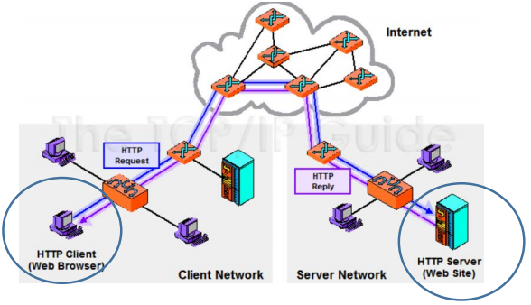
| Informazione | Intercettabile? | Dati |
|---|---|---|
| Non Cifrata | Sì. | In chiaro, leggibili. |
| Cifrata | Sì. | Illeggibili. |
L'informazione, cifrata o meno, può essere quasi sempre intercettata. Ovviamente, se cifrata, è meno probabile che venga decifrata e che i dati ottenuti vengano utilizzati in modo malevolo.
Informazioni fondamentali in una Applicazione WEB
In un sito web devono esserci, per legge:
Informativa sulla privacy (Che deve rispettare GDPR);
Obbliga a chi fornisce il servizio di dire come utilizza i dati e come vengono raccolti.
Devo fornire anche informazioni sui servizi terzi. Ad esempio:
- Se utilizzo un Widget con Google Maps, nell'informativa della Privacy debbo inserire anche un collegamento all'informativa sulla privacy di Google Maps.
Partita IVA
Per vedere un quantitativo di informazioni utili in una pagina web Inspect Network e ricarico la pagina. Grazie a questo strumento riesco a vedere tutti gli elementi presenti in questa pagina.
19/02/2018 LAB 01
GIT
Controllo di versione: modo per gestire i cambiamenti in un sistema, non necessariamente legati ad un software.
Mentre un modo molto utilizzato è copiare le cartelle del nostro codice, questa è una cattiva gestione di versione.
Attraverso GIT invece ho un controllo migliore.
Version Control Systems
Creati per avere un modo proprio e funzionale di gestire i cambiamenti.
Reversibilità:
Capacità principale di un VCS, ci permette di ritornare in qualsiasi punto delle nostre versioni salvate. Utile se effettuiamo cambiamenti che modificano drasticamente il funzionamento della nostra versione.
Concorrenza:
La concorrenza ci permette di avere diverse persone che fanno cambiamenti allo stesso progetto, facilitando il processo dell'integrazione dei cambiamenti nei pezzi di codici alle quali lavorano due o più developers. Permette una gestione dei conflitti se più persone lavorano allo stesso file.
Annotazione:
Possibilità di commentare ogni versione e modifica effettuata nel codice.
Local Version Control Systems
Versione "cattiva" della gestione delle versioni. Copio le cartelle in base alla versione.
Central Version Control Systems
SVN o sistema a Subversion della Oracle, dove ho un server centrale e i computer locali fanno una copia del file sul quale lavorano, che poi inviano al server.
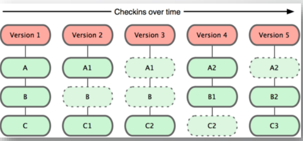
Dettagli
- Il server farà il merge.
- L'utente non ha accesso alla repository, ha accesso solo all'ultima versione.
- L'utente può lavorarci solo se connesso al server.
- È in rete, quindi tende ad essere più lento di un sistema distribuito.
- Nel server effettua copie dei file modificati per ogni versione.
Distributed Version Control Systems
GIT è un sistema distribuito, dove, al contrario del CVCS non ha bisogno di una continua connessione al server, perchè ha una copia identica della repository centrale e può gestire tutte le versioni senza essere collegato.

Dettagli
- Dopo aver effettuato le modifiche, effettuo pull request o push diretto.
- Lavora nei filesystem, non ha bisogno di una connessione al server per lavorare.
- GIT salva solo i DELTA dei file, cioè le modifiche, quindi è molto più leggero e veloce.
Stati GIT
Modifica i file nella directory, aggiungo uno snapshot dell'area attuale(area di Staging) ed effettuo un COMMIT nella git Repository.
Working directory: Directory Lavorativa, directory dove ho la mia repository.
Staging Area: Area dove ho effettuato le modifiche, ma non sono ancora confermate
Git Directory: Directory contenente i file di git. Con un commit, posso aggiornare questo descrittore e aggiornare anche la working directory .
Creazione e Clonazione Repository
Creazione
git init
Comando che, nella cartella attuale, mi permette di inizializzare un file git per gestire le versioni nella directory attuale.
Clonazione
git clone https://link.xyz/miofile.git
Mi permette di clonare la repository completa, con il file git completo con tutte le modifiche delle versioni salvate.
Branches
Git funziona con un sistema a "rami" dove possiamo avere dei path di development indipendenti.
Ogni branch coesiste nella stessa directory, ma hanno storia delle versioni NON in comune.
Questo mi permette di poter modificare un branch senza modificarne gli altri, potendo effettuare modifiche esclusivamente ad una versione/funzione del sistema.
Master: branch di default di git.
L'utilità è la possibilità di fare modifiche senza toccare la versione principale.
Aggiunta Branch Nuovo
git branch NOMEDELBRANCHNUOVO
esempio:
git branch testing
Clono il branch master e lo chiamo testing
Cambio del Branch
git checkout NOMEDELBRANCH
esempio:
git checkout testing
Imposto il mio puntatore HEAD su quale BRANCH spostarmi.
HEAD: Puntatore che punta al branch attuale dove mi trovo.
Aggiunta file
git add FILEDAAGGIUNGERE
esempio:
git add file1.txt file2.jpg ../file3.mov
git add miofile.txt
git add *
Mi permette di aggiungere al commit(versione) attuale i file che voglio. Questi file saranno i file nuovi, i file che ho aggiunto o modificato.
Conferma versione
git commit -m "MESSAGGIO"
esempio:
git commit -m "fix something, doing anything"
Ho creato una versione, lasciando un messaggio per chi leggerà.
Modifica dell'ultimo messaggio
git commit --amend -m "messaggio modificato"
Utile se mi sono accorto di aver scritto qualche eresia nel messaggio dell'ultimo commit.
Modifica di più commit
git rebase
Comando avanzato, leggi la guida per saperne di più.
Unione di due versioni
git merge BRANCH
Unisco la versione in BRANCH sul branch attuale.
Se voglio copiarle in master
git checkout master
git merge NOMEBRANCH
Ottenere nuove modifiche dal server
git pull
Vado ad ottenere dal server le modifiche nel branch attuale se ce ne sono .
Controllare se ci sono nuove modifiche dal server
git fetch
git status
FETCH ci permette di ottenere solo la lista dei delta nel branch attuale (e non ottiene le modifiche salvandole in locale come
git pull).
STATUS ci permette di controllare quanto è avanti o indietro la nostra versione con la versione sul server.
Inviare le modifiche al server
git push
Invia al server le modifiche e i file modificati che differiscono (delta) dalla versione su server.
ATTENZIONE, questo comando funziona solo se siamo avanti di modifiche dalla versione sul server. Se la versione sul server è aggiornata (più nuova della nostra), cioè ha modifiche che noi non abbiamo, DEVI prima ottenere le modifiche e fixare eventuali conflitti.
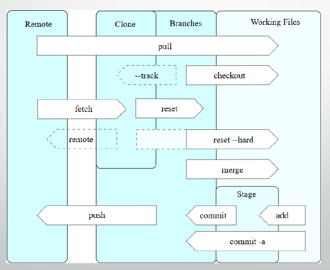
GitLab
Tutorial fornito dal professore.
Per utilizzare gitlab dobbiamo utilizzare una chiave SSH.
Generare una chiave SSH
Dopo aver scaricato GIT

ssh-keygen -o -t rsa -b 4096 -C "email@dominio.xyz"
Dove
-tè il tipo di cifratura utilizzata (RSA);-bè il numero di bits con la quale verrà generata;-Cè il commento che daremo per ricordarci a cosa è collegata.
Se non abbiamo un path con delle key ssh, ci chiederà dove metterle. Lasciamo il percorso base.
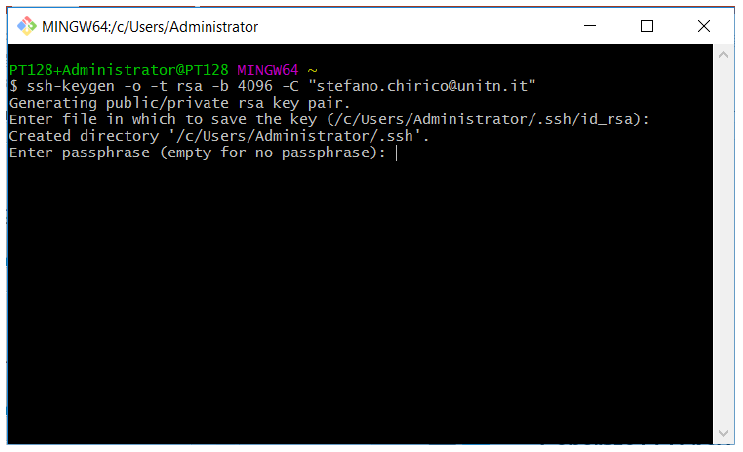
Ci chiede una password per proteggere la key. Per NON inserirla basterà dare un invio.
Fornire key pubblica a GitLab
Dentro alla cartella di prima avremmo due file:
id_rsaid_rsa.pub
noi dobbiamo aprire la key pubblica e fornirla a gitlab.
ATTENZIONE a fornire a gitlab la chiave PUBBLICA e non quella privata.
La chiave pubblica è quella con estensione
.pub
Un modo per copiare la key è con il seguente comando effettuato nella cartella dove abbiamo la key id_rsa.pub:
cat id_rsa.pub | clip
dove
catlegge in uno stream i dati dal fileid_rsa.pub- concatenando il pipeline con
clipli copio sulla clipboard.
Copio su gitlab la key pubblica in User Settings SSH Keys.

Per altre informazioni riporto alle Slide del professore.
Fornire le proprie informazioni a GitLab
Prima di clonare, soprattutto se ho creato una repository privata (vedi slide del professore), essendo tale non è accessibile senza una effettiva autenticazione.
Al push, pull o clone ci verrà chiesta un autenticazione se la repository è privata.
Nonostante questo, per effettuare modifiche sul file git dobbiamo dire chi siamo. (altrimenti non sa chi ha modificato il file git).
Autenticarsi globalmente
Posso impostare un username globale, cioè per ogni repository:
git config --global user.email "mia@email.xyz"
git config --global user.name "Nome Cognome"
Autenticarsi solo sulla Git Directory corrente
Effettuabile solo in una cartella con un git inizializzato:
git config user.email "mia@email.xyz"
git config user.name "Nome Cognome"
25/02/2019
Introduzione ai Sistemi Distribuiti
Sistema che funziona a livello globale è sicuramente distribuita.
google, facebook etc etc
Essendo arrivati al limite fisico dei transistor dei processori, la potenza di calcolo è data da una moltitudine di processori. Oltretutto posso avere più calcolatori che lavorano sullo stesso processo.
Sistemi distribuiti: Definizione
Da un punto di vista operativo Un sistema distribuito è un sistema in cui i componenti hardware e/o software, situati in computer collegati in rete, comunicano e coordinano le loro azioni solo passando messaggi.
Da un punto di vista dell’utilizzatore: Un sistema distribuito è una raccolta di computer indipendenti che appare ai suoi utenti come un unico sistema coerente.
Da notare come l'utilizzatore ha astrazione e non vede i diversi server che ci sono dietro.
Il sistema distribuito è organizzato con un middleware, è esteso a più computer e offre a ciascuna app la stessa interfaccia(API)
Perchè faccio ciò? lo faccio per distribuire il carico.
Più calcolatori gestiscono più richieste! Evita un attacco DDoS(Denial of Service multiplo), mi permette di gestire meglio il traffico che arriva al pc.
Alla base uso il round-robin in DNS: Associa un nome ad un indirizzo IP, quando cerco con nslookup ottengo più indirizzi, poichè un singolo nome dns ha più server collegati.
Il middleware gestisce l'instradazione dei pacchetti sui vari server. Ovviamente dobbiamo avere una larghezza di banda adeguata e interfacce di rete che la supportano.
Approfondimento:
VPS: Virtual Private Server, virtualizzazione dentro una singola macchina di un OS a disposizione dall'utente. Molto più lento di un barebone perchè ho multitasking su servizi.
Tre modi:
- DNS: Uso il DNS per bilanciare il traffico;
- Hardware;
- Software: Uso di un middleware per gestire il traffico e indirizzarlo alle macchine.
Può essere usato in diverse modalità, ovviamente uso le più veloci per real time APP, mentre posso permettermi un rallentamento in motori di ricerca e simili.
Una rete cellulare è un sistema distribuito: le antenne sono sistemi distribuiti che forniscono il segnale a tutti.
Obbiettivi sistemi distribuiti
- Condivisione di risorse;
- Trasparenza di distribuzione;
- Apertura verso espansione dei servizi;
- Scalabilità;
- Fault Tolerance;
- Etereogeneità di HW e SW .
Condivisione delle risorse
L'idea è avere accesso remoto ad una risorsa, per ottimizzare avendo un controllo efficiente (stampanti, archivi...).
Ho diversi motivi per condividere, principalmente risparmio in costi (compro una stampante per piano, non faccio una stampante per ogni dipendente). Permette in oltre di gestire la concorrenza.
Si implementano modi a tessera, dove l'utente dopo aver inviato la stampa, quest'ultima inizia solo se l'utente passa una tessera sulla stampante stessa. Utile per loggare chi stampa cosa e per privacy.
Questo modello descrive come:
- Le risorse sono rese disponibili;
- Le risorse possono essere utilizzate;
- Fornitore di servizi e utente interagiscono tra loro.
Modelli di condivisione delle risorse:
Modello Client-Server:
- I processi server fanno da gestori delle risorse e offrono servizi;
- I client fanno richiesta al server che fornisce i servizi;
- Uso di HTTP.
Modello basato su oggetti:
- Uso di un sistema ad interfacce tra oggetti o simil oggetti
Trasparenza della distribuzione
Definizione: Un sistema distribuito che è in grado di presentarsi ai suoi utenti ed applicazioni come se fosse solo un singolo sistema si definisce trasparente.

Ho diversi gradi di trasparenza, devo avere un bilanciamento tra prestazioni e alto grado di trasparenza.
I problemi che possono sorgere sono principalmente se succede qualcosa al datacenter e/o ho da effettuare un aggiornamento. Se ho un sistema bancario, non posso spegnere ed accendere il server! Allo stesso momento, devo replicare i dati per evitarne la perdita. Devo offrire concorrenza e migrazione, in uso o meno. L'accesso, indipendentemente da dove viene fatto, deve essere possibile. Devo avere una gestione delle rotture (comprare HW di qualità). Tutto ciò deve essere fatto senza che l'utente lo sappia.
Apertura verso espansione dei servizi
Definizione:Un sistema distribuito aperto è un sistema che offre servizi in base a regole standard che descrivono la sintassi e la semantica di tali servizi.
I servizi sono specificati tramite interfacce:
- Interface Definition Language (IDL): acquisizione della sintassi (la semantica e’ la parte difficile da specificare) ;
- Estensibilità: un DS aperto può essere esteso e migliorato in modo incrementale, es aggiungendo o sostituendo componenti.
Scalabilità
Definizione: Un sistema è scalabile se rimane efficace quando vi è un aumento significativo della quantità di risorse (dati) e del numero di utenti.
La scalabilità indica la capacità di un sistema di gestire un carico futuro crescente.
Può essere:
- Scalabile in dimensione;
- Scalabile geograficamente;
- Scalabile in modo amministrativo.
Problematiche:
Scalabilità in dimensione:
Soluzioni centralizzate creano problemi di banda e stabilità se cade il server principale.

Scalabilità Geografica
- Comunicazione in LAN Sincrona
- Comunicazione inaffidabile in WAN
Scalabilità Amministrativa:
- Distribuzione su più domini, ho dei conflitti per l'utilizzo delle risorse.
Metodologie:
Distribuzione
- Divido risorsa in più parti e la distribuisco su più server attraverso il sistema.
Replica:
Replica di un servizio su più server dislocati;
Gestione della cache , locale e remota(proxy server);
- DNS Caching: Cerco il DNS, lo cacha in locale dopo averlo ottenuto per le prossime richieste entro tot ore.
Aumenta disponibilità e bilanciamento di carico.
Nascondere lentezze di comunicazione
Fare attenzione alla Larghezza e ampiezza di banda! La Latenza conta! Più aumenta la latenza e meno banda possiamo utilizzare. Calcolo Throughput online.
Fault Tolerance
Tolleranza dei problemi agli errori/rotture.
Rotture Hardware
Database
Transaction
- Completa
- Uso di rollback se incompleta
Ridondanza dell'informazione
- Problema di avere informazioni memorizzate in più zone, ma uguali.
Spesso i cambi nel datacenter avvengono ogni tre anni, con controlli effettuati spesso.
Implicazioni dei sistemi distribuiti
NON esiste global clock
- Non posso sincronizzare tutte le macchine!
- Non esiste un sistema di sincronizzazione globale!
Comunicazione
- Inaffidabile;
- Non protetta;
- Costosa.
Cluster di calcolo
Sistema di calcolo dove ho più server che lavorano ad uno stesso calcolo utilizzando lo stesso stema operativo.
Molto usati per
- Problemi di ingegneria;
- Previsione del meteo;
- Struttura dell'universo;
- ... e tutti i probemi computazionalmente complessi!
Distributed Computing as an Utility
- PaaS: Platform as a Service;
- SaaS: Software as a Service;
- IaaS: Infrastructure as a Service.
Introduzione alle socket
Due possibilità di comunicazione:
TCP
- Comunicazione affidabile;
- Più lento per gli ACK;
- Recupero dagli errori.
UDP
- Non ho controllo errori;
- Più efficiente;
- Non si pone il problema di perdita dati.
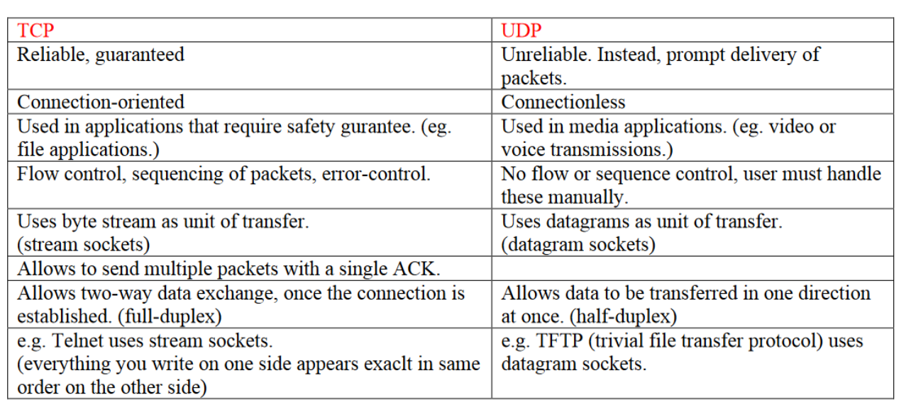
Sockets: Definizione
Definizione: Una socket è un meccanismo che consente la comunicazione tra i processi, siano essi programmi in esecuzione sulla stessa macchina o diversi computer connessi in rete.
Più in particolare, le socket Internet forniscono un'interfaccia di programmazione allo stack del protocollo di rete gestito dal sistema operativo. Usando le API, un programma può inizializzare rapidamente un socket e inviare messaggi senza doversi preoccupare di problemi come il framing dei pacchetti o il controllo della trasmissione. Esistono diversi tipi di socket disponibili, ma siamo interessati solo ai socket Internet:
- Datagram Sockets (UDP)
- Stream Sockets (TCP)
Le differenze sono molteplici, ma principalmente per tolleranza perdite 0 si utilizza TCP.
Per applicazioni VoIP invece utilizzo di UDP, tollero la perdita di trasmissione(ci** c*me va si capisce comunque, mentre un trasferimento di un file deve essere impeccabile) e mi sarebbe costosa una ritrasmissione continua.
Mentre per i Stream devo aprire e chiudere la connessione, per un Datagram non ce n'è bisogno.
Un server sarà in listen, mentre un client invierà (TCP).
Composizione socket
Una socket è rivolta in hostDNSIndirizzo IP + Porta.
Utilizzo protocollo IP, con Porta, dove quest'ultima sarà e se ho applicazioni personalizzate, poichè le porte sono porte conosciute e riservate.
Debbono ovviamente essere porte non già utilizzate nello stesso IP.
Esempio di porte standard

In JAVA:
import.java.net.*;
Per socket TCP:
Socketè il socket dalla parte del client;connectinizia una sessione TCP.
ServerSocketè il socket dalla parte del server.binddove collego il mio IP ad una Porta specifica;listenaspetta per ricevere la comunicazione.
Mentre per i socket UDP:
DatagramSocketsia per client che per server.
Nota che i byte-stream TCP combina gli stream consecutivi. La formattazione deve essere fatta dall'app.
26/02/2019 - Lab
Uso di OpenJDK, cambia dall'originale solo la licenza.

Dopo aver installato Java, come nelle slide, installare mettere la JAVAHOME sul path di sistema.
Dopo aver installato Java, installo netbeans.
Disattivare proxy https in gitlab
git config --global --unset https.proxy
Versioni
se incremento qualcosa che è una nuova funzione, incremento .
Per altre modifiche minori incremento che non introduca nuova versione
Per modifiche bugfix e simili incremento .
Package
Dominio della azienda al contrario
it.unitn.disi.wp.labXX.nomeprogramma
Creazione del progetto con maven
Crea progetto Java Maven
04/03/2019
Visualizzazione pagine web
HTML: Linguaggio descrizione pagina (HyperTextMarkupLanguage)
- Sistema di markup, indica la struttura di esso.
- Statico, veloce, ma poco versatile.
CSS: Stile di visualizzazione pagina
Browser:Renderizzazione a schermo di pagina HTML in ascii
Da tenere conto i problemi di disabilità visiva e funzionale:
- Evitiamo combinazioni con alto contrasto;
- Daltonismo;
- "vecchiaia".
Utilizzo di strumenti come JS con ingrandimento al click.
Un sito lento è poco usato.
HTML5: Tentativo di versatilità del documento html, con sistema di caching(?) supportato.
Storicamente
I browser non rispettavano la definizione dei protocolli, perchè le direttive venivano date successivamente.
Come funziona?
Utilizzo di tag: <body></body>
dove:
<body>è il tag di apertura;</body>è il tag di chiusura.
Una pagina HTML deve essere scritta bene, oppure il browser interpreta come vuole.
Elemento HMTL
<p>è un tag<p>Contenuto</p>- l'insieme dei due è un elemento.
Attributi HTML
<a href="cose">Cose</a>
href è un attributo.
Commenti HTML
<!-- COMMENTO -->
Un commento non viene tradotto ne visualizzato dal browser.
Principalmente
Non è case sensitive;
Non tutti i tag vengono chiusi una volta aperti;
<br>
I TAG sconosciuti vengono ignorati;
CLRFvengono sostituiti con uno spazio;
Diviso in
HEAD: Informazioni per definire la pagina. Informazioni non renderizzate.
BODY: Contenuto della pagina.
Intestazioni
<h1>...</h1>
<h6>...</h6>
più alto è il numero, più è piccolo il titolo.
Tipi di carattere
1carattere normale2<b>carattere Bold</b>3<i>Carattere Italic</i>4<TT>Carattere Teletype</TT>
e varie combinazioni di essi.
Caratteri speciali
< si scrive <
> si scrive >
& si scrive &
Devo rispettare le codifiche! è leggibile ovunque così.
Liste
Ordinate
xxxxxxxxxx41<ol>2<li>uno</li>3<li>due</li>4</ol>Non ordinate
xxxxxxxxxx41<ul>2<li>uno</li>3<li>due</li>4</ul>Definite
xxxxxxxxxx51<dl>2<dt> SGML <dd> Standard Generalized Markup Language3<dt> HTML<dd> Hypertext Markup Language4<dt> XML <dd> Extensible Markup Language5</dl>Sto fornendo come "pallini", SGML,HTML e XML.
Elementi di formattazione
<P><BR><BLOCKQUOTE><PRE><HR>
<P>: Paragrafo, tiene la formattazione.<BR>Break, va a capo.<BLOCKQUOTE>: Blocco quotato, simil citazione, indentato.<PRE>: Contiene codice, formattazione forzata.<HR>: Linea orizzontale.
Meta Dati
<meta ...>
Inserite nello HEAD, ci permettono di indicizzare il tutto.
xxxxxxxxxx31<meta Name=“author” Content=“Alessandro Borghese”>2<meta Name=“ keywords” Content=“Cucina d’Osteria”>3<base HREF=“URL”>Importante non abusare di questa funzione o il motore di ricerca indicizzerà male(o non lo farà proprio) il nostro sito.
Link interni(ed esterni)
Interni:
xxxxxxxxxx41<a href=“#altro”>cose</a>2:3:4<a name=“altro”>Ecco le cose</a>il primo è cliccabile, il secondo è un riferimento.
Mentre i link esterni sono come quelli visti prima.
xxxxxxxxxx11<a href=“URL”>Link</a>Form
Fornisco all'utente la possibilità di inviare informazioni al server.
x1<FORM method="POST" action="/cgi-bin/elabora">2Scrivi il tuo nome3<Input type="text" size“=25" maxlength="15“ name=“a”>4<Input type="submit" value="spedisci">5<Input type="reset" value="annulla">6<Input type="radio" name="colore" value="rosso">Rosso7<Input type="radio" name="colore" value="argento" checked>Argento8Fai la tua scelta:9<Input type="checkbox" name="tipo" value="auto" checked>Auto10<Input type="checkbox" name="tipo" value="bus">Bus11<Input type="checkbox" name="tipo" value="camion">Camion12<Select name="colore">13<option>Rosso14<option selected>Argento15</select>1617</FORM>Formè la definizione del form stesso.methodspiega come spedire i dati, cioè con uso di operazioni CRUD.actionspiega dove spedirli;enctypespiega il MIME usato per spedire i dati;
Inputè un campo di inputtypespiega che tipo di input è;textè testo;submitè il tasto che invia i dati;resetè il tasto che elimina tutti i dati inseriti nel form.Radioè una lista definita daname, dove avrà un solo output restituito(posso selezionale solo uno dei due).Valuein questo caso è il valore che fornisco quando seleziono uno dei due.checkeddefinisce quale è selezionato di base.
checkboxè una lista definita danamedove avrà uno o più output restituiti.(Posso selezionare più di uno).Valuedefinisce quale di questi sono stati selezionati.checkeddefinisce quale è selezionato di base.
namedefinisce l'oggetto/gli oggetti che stiamo settando.
valueè il testo mostrato all'utente sulbuttono il valore di ritorno.
Selectcrea un menù a tendina, con il relativonamedi definizione.optiondefinisce una opzione del menù a tendina, con il relativovalue.selectedè l'opzione settata di base.
L'output sarà
nome=valore
Script e Style
Posso avere esecuzione di codice JS sul browser, con <script>...</script>
mentre posso avere lo stile della pagina con <style>...</style> senza necessariamente utilizzare un file CSS.
xxxxxxxxxx41<STYLE TYPE="text/css">2h1 {color:red}3p {font-size:18}4</STYLE>
Lo stile va per livelli, cioè viene eseguito con priorità quello dei tag:
<p style="...">
ha meno priorità quello di pagina:
<style>...</style>
e ha ancora meno priorità quello esterno(in un file CSS).
xxxxxxxxxx71<script type=“text/javascript” language=“javascript”>2<!--3function ciao() {4alert(“hello world”)5}6//-->7</script>Standard da utilizzare
xxxxxxxxxx11Spiega al browser quale standard utilizzare. Non è un tag.
Validatore
Controlla che il codice sia corretto. Qui.
HTML DOM
Dom è un Document Object Model.
Document Object Model: Rappresento un documento HTML come oggetti, annidati uno dentro l'altro, come i TAG HTML.
Struttura di esempio:
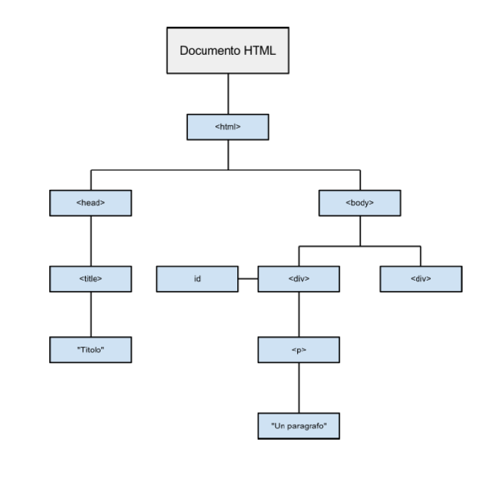
Ogni oggetto(quindi tag) in DOM ha:
Proprietà: Caratteristica, ad esempio, nome.
n.innerHTML- restituisce tutto ciò che è contenuto in n;n.nodeName- restituisce il nome di n;n.nodeValue- restituisce il valore id n;n.parentNode- restituisce il nodo padre di n;n.childNodes- restituisce l’elenco di nodi figli diretti di n;n.attributes- restituisce l’elenco degli attributi di n.
Metodi: Meccanismo per modificare/interagire una proprietà del nodo stesso.
n.getElementById(id)- restituisce l’elemento con uno specifico id;n.getElementsByTagName(name)- restituisce l’elenco di tutti gli elementi del tipo indicato tra parentesi e contenuti nel nodo n;n.appendChild(node)- inserisce il figlio indicato tra partentesi come figlio di n;n.removeChild(node)- elimina il nodo figlio di n indicato tra parentesi.
Utilizzo:
xxxxxxxxxx11document.getElementById("primo").innerHTML=”<h3>Cambio contenuto<\/h3>”;Cambio contenuto dell'elemento con ID "primo" e lo metto con ciò scritto dentro a innerHTML.
CSS
CSS sta per Cascading Style Sheet.
Descrivo lo stile della pagina da utilizzare.
Sintassi

Cascading
Cascading indica il modo in cui vengono risolti I conflitti in caso di conflitti:
- Inline style (highest priority);
- Internal style sheet (second priority);
- External style sheet (third priority);
- Web browser default (only if not defined elsewhere).
Se più stili in conflitto sono definiti nel foglio samestyle, verrà applicato solo quello finale.
xxxxxxxxxx51p {2color: red;3font-style: italic;4text-align: center;5}Gli spazi sono ignorati, come gli acapo.
Tipi di elemento
Selector:
xxxxxxxxxx31p{2color:yellow;3}Modifico tutti i tag che hanno quel tag specifico. (in questo caso
<p>)ID:
xxxxxxxxxx31#primo{2color:yellow;3}Modifico tutti i tag che hanno quell'ID. (in questo caso
<taggenerico id="primo">)Class:
xxxxxxxxxx31.nomeclasse{2color:yellow;3}Modifico tutti i tag che hanno quella classe.
(in questo caso
<taggenerico class="nomeclasse">)È possibile specificare una classe che funziona solo per il determinato tag:
xxxxxxxxxx31h1.nomeclasse{2color:yellow;3}funzionerà solo in
<h1 class="nomeclasse"></h1>Mentre
xxxxxxxxxx31.nomeclasse h1 {2color:yellow;3}funzionerà solo nei tag
h1dentro ad un tag con classenomeclassexxxxxxxxxx51<div class="nomeclasse">2<h1>3Ciao!4</h1>5</div>
Per gestire un elemento all'interno di un elemento
xxxxxxxxxx31h2 h1 { 2 color:yellow;3}Come nell'esempio delle classi, il funzionamento è lo stesso.
h2 dentro h1.
Gestire più di un elemento
xxxxxxxxxx31h2,h1 { 2 color:yellow;3}Pseudo Selettori
hover: se ci passa sopra con il mousexxxxxxxxxx31h1:hover {2color:yellow;3}link: se è un linkxxxxxxxxxx31a:link {2color:yellow;3}visited: se è un link ed è già stato visitatoxxxxxxxxxx31a:visited {2color:yellow;3}
Colori
sono definiti in diversi modi:
- per Nome:
color:yellow; - per Valore Esadecimale:
color:#FF0000; - per valore RGB(RedGreenBlue):
color: rgb(255,0,0); - per valore HSL:
color: hsl(0,100%,100%);
Ricordiamo che per nome sono molto limitati:
aqua, black, blue, fuchsia,gray,grey, green, lime,maroon, navy, olive, purple,red, silver, teal, white, yellow.
color per il colore dell'oggetto/font, mentre background-color per il colore di background.
Larghezze e percentuali
pxunità per il pixel;emgrandezza del font attuale (2emè due volte la grandezza del font);ptunità per i punti, usata spesso nei media;%sono percentuali(width: 80%)- Altre unità includono
cm,mm,in(inches).
Composizione di un Box
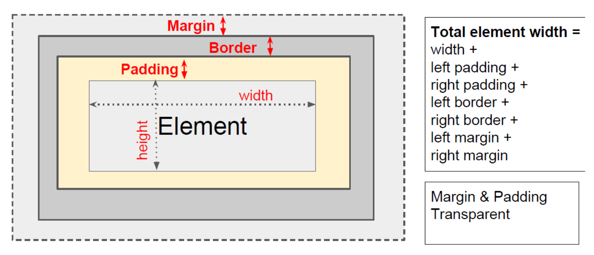
Testo: Font
I font non sono tutti considerati sicuri. Quelli considerati tale, sono di base a tutti i browser.
Si specificano con font-family.
xxxxxxxxxx31p{2 font-family: Arial, Helvetica, Serif;3}Cercherà Arial, se non lo trova, mette Helvetica, se non lo trova mette Serif. Se non lo trova mette il font di base.
Altri attributi:
font-size:settta l’altezza del font (remember units such as px, em, pt);font-weight: indica la tipologia di variante del font (grassetto, etc...)(bold, light,normal,...);font-style: sIndica se il testo e’ scritto in corsivo (italic, normal);text-decoration: indica se deve essere sottolineato o barrato (underline, overline, line-through, none);text-transform: cambia il capitalizzazione (capitalize, uppercase,lowercase, none).
Testo: Spacing
letter-spacing: imposta la spaziatura tra le lettere. Il valore può essere length o normal;
word-spacing: imposta la spaziatura tra le parole. Il valore può essere length o normal;
line-height: imposta l'altezza delle linee in un elemento, ad esempio un paragrafo, senza regola la dimensione del carattere. Può essere un numero (che specifica un multiplo del dimensione del carattere, quindi "2" sarà due volte la dimensione del carattere, ad esempio), una lunghezza, una percentuale o normal;
text-indent: indenterà la prima riga di un paragrafo, a una data lunghezza o percentuale;
text-align: allinea il testo all'interno di un elemento a sinistra, a destra, al centro o giustificato.
Layout delle pagine
Mobile First Pages
Pagine che sono basate su framework per funzionare correttamente.
- Comode, veloci e adattive;
- Difficili da programmare/gestire.
Framework css molto utilizzato: Bootstrap.
05/03/2019-Laboratorio
Seguito le slide pari pari.
Firefox e Chrome mi mostrano la struttura del DOM modificata al momento dai vari script.
.ready() è il codice che si esegue a fine caricamento.
11/03/2019
Web Architectures
Tim Berners-Lee 1989 www
Ha sviluppato HTML, URL, HTTP;
Recupero informazioni da diverse fonti, anche le NewsGroup.
Architetture multi-tier

Architetture a più tier per ottenere informazioni:
Ho una rete;
Ogni livello ha diverse funzionalità;
Il frontman delle richieste è il WebServer. Il WebServer decide dove instradare il tutto.
- Sotto di esso ci sono gli AppServer/DBserver
La più basilare è composta da client e server.
Versione di base
Ha due livelli, come detto prima.
Il browser fa richiesta, ottiene la pagina dal server e mostra a schermo.
Web Browser
Programma con il quale porto informazioni, graficamente e non, all'utente.

Web Server
Usa il protocollo HTTP, fornisce al client ciò che gli viene richiesto se disponibile e se permesso.
I più usati sono Apache e Nginx.
Entrambi sono multithread. Se crasha una istanza, il webserver rimane online!
Lighthttpd si utilizza nei server Embedded.
HTML
Non è un linguaggio di programmazione!
URI e URL
Uniform Resource Identifier (URI) e Uniform Resource Locator (URL) non sono sinonimi.
xxxxxxxxxx11Un URI può essere classificato come un localizzatore, un nome o entrambi. Il termine “Uniform Resource Locator” (URL) si riferisce al sottoinsieme di URI che, oltre a identificare una risorsa, forniscono un mezzo per localizzare la risorsa descrivendo il suo meccanismo di accesso primario (ad esempio, la sua “posizione” di rete). Il termine “Uniform Resource Name” (URN) è stato usato storicamente per riferirsi a entrambi gli URI sotto lo schema “urna” [RFC2141], che sono tenuti a rimanere globalmente unici e persistenti anche quando la risorsa cessa di esistere o diventa non disponibile, e a qualsiasi altro URI con le proprietà di un nome.
Tutti gli URL sono URI(Falso se cambio interpretazione), ma non tutti gli URI sono URL perchè ho anche gli URN.
Esempio URL
http://www.google.com/cose/index.html
ho un protocollo, un web domain, una o più folder ed eventualmente un file HTML.
Mailto URI
mailto:matteo@rizzi.xyz
Invio una mail cliccando sul link. Ci sono vari parametri.
NON usare nelle pagine web, a meno di sistemi anti web crawler (o l'email viene presa dai robot e inserita in sistemi di antispam).
Esempio
xxxxxxxxxx11 <a href="mailto:mario.rossi@unitn.it?subject=Superamento%20esame& amp;cc=programmazioneweb%40gmail.com&body=Buongiorno %2C%20Lei%20ha%20uperto%20l'esame">mario.rossi@unitn.it</a>
HTTP
Protocollo request response standard di client e server. Il protocollo inizia dal client, va verso il server e ho un valore di ritorno.
Messaggio di request:
- Request Line
- Headers
- Empty Line
- Body
HTTP mette a disposizione otto metodi:
HEAD
GET
www.google.com/q="cose"¶metrodue="cosedue"qeparametroduesono due parametri, con valori rispettivamentecoseecosedue. Separati da un &.POST
Parametri passati direttamente nell'header.
PUT
DELETE
TRACE
OPTIONS
CONNECT
| Nome | Tipologia |
|---|---|
| GET | Safe |
| HEAD | Safe |
| OPTIONS | Safe |
| TRACE | Safe |
| POST | Unsafe |
| PUT | Unsafe |
| DELETE | Unsafe |
I metodi definiti safe sono metodi che ottengono informazioni senza modificarle.
I metodi definiti unsafe sono metodi che modificano i dati, quindi non "sicuri".
Nei messaggi di response ottengo uno status code: Un codice che mi fa capire se la transazione è andata a buon fine(200) o meno (404). Ne ho di diversi tipi:
2XXSono codici di successo;3XXSono codici di reindirizzamento;4XXSono codici di mancanza risorsa/impedimenti vari;5XXSono codici di errore del server.
HTTP è Stateless.
È versatile, ma ad ogni richiesta il server deve inviare l'informazione! Per mantenere delle informazioni utilizzo diverse tecniche:
- Cookie
- Sessioni
- Variabili nascoste(Form)
- Parametri nell'URL (Get)
xxxxxxxxxx21GET / HTTP/1.12Host: www.unitn.itè un esempio di richiesta.
Il browser può CACHEARE la richiesta!
- Ha una scadenza;
- Utile perchè controlla solo se la pagina è stata aggiornata, altrimenti ti mostra la pagina salvata in cache.

Noto ch equasi tutti i parametri sono capibili. Content-type mi dice che codifica uso dopo.
HTTP e HTTPS
HTTP è la versione non sicura, gira sulla porta 80, mentre https nella porta 443
HTTPS cifra i dati nella connessione, rendendoli difficili da sniffare.
L'esistenza dell'HTTPS è possibile solo attraverso i certificati.
I certificati certificano che il sito sia quello e che non sia un falso.
Una certification authority firma il certificato approvando i dati.
Un certificato vale per l'URL scritto sul tale. Posso avere i certificati asterisco:
*.unitn.it
vale per unitn.it e sottodomini!
Certificati HTTPS: Tipi

Grigio: Self-Certified
Non ho una certification authority che l'ha firmata, non sono affidabile
Verde non esteso:
Certificato ma senza dettagli.
Verde Esteso:
Certificato con dettagli.
Validità
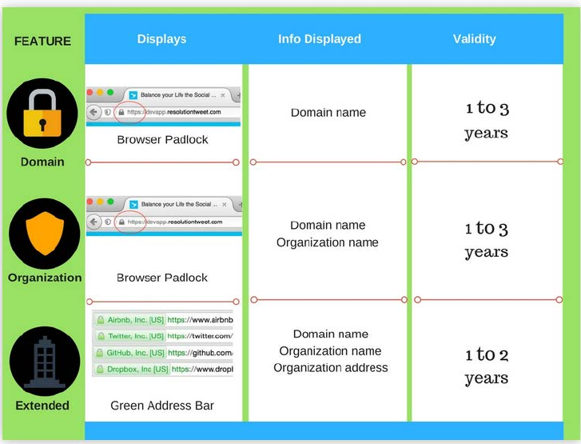
Web Arch: Estensioni
CGI
Estende l'architettura a 3 tiers aggiungendo al web server un servizio/ server che funziona dietro al web server.
Ho un funzionamento gerarchico!
È svantaggioso per lo spawn continuo di processi.
Provocando tempi lunghi e possibili blocchi!
Application Server
Aggiungo uno strato applicativo che esegue una determinata funzione. Questo server aspetta un input, lo esegue in base alla richiesta e lo rifornisce al webserver.
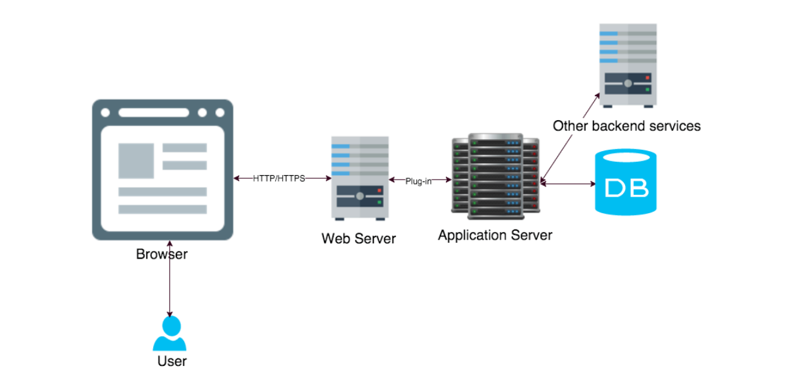
Per esempio tomcat e glassfish sono application server.
Architetture multi-tier

Dei servizi specializzati fanno una determinata funzione. Servizi già fatti, già pronti e più sicuri!
Ho il vantaggio che posso modificare più facilmente ogni livello per la scalabilità.
Network e architetture distribuite
Siamo passati da applicazioni monolitiche a client-server e quindi a N-tier, l'applicazione è stata suddivisa in un numero sempre maggiore di parti.
Questa tendenza è stata estesa in un approccio moderno chiamato architettura orientata ai servizi (SOA). SOA si basa sull'idea di scomporre un'applicazione in un insieme di attività molto più piccole che possono essere eseguite da piccoli "componenti software" indipendenti, ognuno dei quali esegue un'attività discreta chiamata comunemente servizio.
SOA
Service-oriented Architecture:
I componenti software forniscono servizi ad altri componenti tramite un protocollo di comunicazione, in genere su una rete. La parte che offre il servizio è conosciuta come un fornitore di servizi (un server) e la parte che invoca il servizio è un consumatore di servizi (un client).
Ogni servizio è (processo aziendale)
- Ben definito: un componente software con un'interfaccia e un risultato chiaramente definiti
- Out of the box: 'implementazione del servizio è completa e indipendente da qualsiasi prodotto, fornitore o tecnologia
- Uso di BlackBox: l'implementazione del servizio è nascosta (incapsulata) dal consumatore del servizio stesso.
Dei servizi potrebbero essere:
- Conversione di valuta;
- Controllo credito cliente;
- Fornitura dati metereologici;
- Archiviazione dati.
Il SOA è basato su dei principi:
Interoperabilità: Servizi implementati in diversi sistemi, zone o business domains, usando diverse tecnologie, dai linguaggi e piattaforme, che devono lavorare assieme per permettere a diversi clienti e provider di comunicare. Perchè avvenga con successo, devi fare in modo che si utilizzino dei protocolli standard tra i vari dispositivi.
Posizione: Gli utenti devono usufruire del sistema senza necessariamente sapere dove il servizio è posizionato geograficamente.
Reperibilità: Il consumatore deve avere accesso ai servizi rilevanti, cioè deve avere accesso ad appropriati metadata per il servizio.
Questo servizio è spesso effettuato attraverso dei registri.
Distinguiamo tra:
- Run-Time Discovery:(Dinamico) intendiamo che il software in esecuzione, eseguirà alcune configurazioni inviando dei probes sulla rete (o le query a un repository centrale se si vuole comunque pensare in questo modo) per ottenere l'indirizzo IP dei servizi remoti.
- Design-Time Discovery: Al tempo di design si cercano servizi rilevanti per il contesto.
Accoppiamento e Incapsulamento liberi: Le interfacce dovrebbero essere basate su standard di comunicazione più che proprietari e dovrebbero dare meno possibile informazioni sulla propria implementazione, effettuando incapsulazione.
Astrazione: Sia l'implementazione incapsulata, sia la tecnologia implementativa e la posizione fisica dei servizi dovrebbero essere completamente invisibili ai consumatori, i quali dovrebbero essere dipendenti solamente dalle interfacce pubbliche.
Autonomia: Più il servizio è autonomo, più controllo avrà verso le proprie implementazioni e sul run-time. Ciò implica maggiore flessibilità e potenzialità per evoluzione. Sia le implementazioni che il run-time possono essere modificate senza dare problemi ai clienti.
Statelessness: I protocolli utilizzati sono stateless, cioè non mantengono lo stato, migliorando la scalabilità e l'uptime(meno possibilità di crash(?)). Nonostante questo, i servizi dovrebbero rimanere stateless fino a quando è permesso loro fare ciò che devono fare senza stato.
Interfacce e contratti standardizzati:I servizi devono essere descritti in modo tecnico e standard. La qualità del servizio fornito, il livello di service agreement, response time avaliability... e costi! Metadata addizionali potrebbero coprire un range di informazioni, per esempio includere un rating della soddisfazione utente, per development futuri.
Riusabilità: I servizi devono essere progettati con l'idea di riutilizzarli. In generale, i service of terms dovrebbero includere una clausula per permettere il riuso in altri progetti.
Riconfigurazione dinamica: I sistemi service-based dovrebbero essere configurabili e riconfigurabili dinamicamente permettendo l'incorporare di nuovi servizi, ma mantenendo coerenza e integrità.
Web Services
Evoluzione SOA, si utilizzano servizi Web, dove descrive come un client accede su un server su internet, usando i protocolli noti.
Il protocollo noto è l'uso del protocollo HTTP REST.
Altri modi:
- XML (eXtensible Markup Language);
- SOAP (Simple Object Access Protocol);
- REST (Representational State Transfer);
- JSON (JavaScript Object Notation) basati.
I servizi web basati sui principi di progettazione SOA garantiranno che le applicazioni web scritte in vari linguaggi di programmazione possano essere eseguite su varie piattaforme e possano utilizzare i servizi Web per scambiare i loro dati su reti di computer in modo simile a quanto avviene nella programmazione concorrente su un singolo host.
Cloud Computing
Evoluzione SOA, utilizzo della cosidetta tecnologia CLOUD.
Definizione NIST:
- Il cloud computing è un modello per abilitare l'accesso alla rete onnipresente, conveniente e on-demand a un pool condiviso di risorse di calcolo configurabili (ad esempio reti, server, storage, applicazioni e servizi) che possono essere rapidamente fornite e rilasciate con un minimo sforzo o servizio di gestione interazione con il fornitore.
- Il cloud computing è la pratica di fornire servizi di elaborazione - server, storage, database, networking, software, analisi e altro - on-demand su Internet. È un mezzo per fornire ai servizi informatici un'utilità per i consumatori allo stesso modo di altri servizi come il gas e l'elettricità. Le aziende che offrono questi servizi informatici in genere fanno pagare per i servizi di cloud computing basati sull'utilizzo.
Si potrebbe considerare che, mentre SOA fornisce servizi su una rete, il cloud estende il principio ad altre risorse come la potenza di calcolo ed i dischi dischi e non si limita alla fornitura di servizi. Ci sono, ovviamente, molti dettagli impliciti: In che modo le risorse vengono addebitate, rese sicure, "pulite" dopo l'uso, ecc. Sono solo alcuni degli aspetti che devono essere considerati.
I servizi possono essere facilmente forniti a poco sforzo!
Caratteristiche principali:
- On demand web service: Un consumatore può automaticamente e unilateralmente ricevere capacità di computing come server time e network storage quando servono, senza richiedere un intervento umano.
- Broad network access: Le capacità di computing sono disponibili per tutto il network e accessibili attraverso meccanismi standard che promuovono l'uso da piattaforme clienti eterogenee(tablet,laptop,workstation e telefoni).
- Resource pooling: Il provider delle risorse fornisce a più consumatori in contemporanea utilizzando un modello a accesso condiviso, con differenti risorse fisiche e virtuali, dinamicamente riassegnate in base alla richiesta dell'utente. Abbiamo un sistema di astrazione che ci permette di evitare che l'utente abbia controllo o conoscenza su dove e come le resources sono distribuite, ma potrebbero ottenere informazioni sul luogo(datacenter, stato, città..).
- Rapid Elasticity: Capacità di adattarsi a forti richieste dei clienti, magari improvvise, con richieste di load molto più forti o molto più deboli del richiesto, in modo che sembrino illimitate e scalabili.
- Measure service: L'uso della risorsa dovrebbe essere misurato, monitorato, controllato e segnalato, permettendo trasparenza sia per il provider che per il cliente stesso, utilizzatore del servizio.
Divise in:
SaaS: Software as a Service
Fornisce applicazioni per utenti finali, fornite via web(dropbox, gdrive, gmail..);
PaaS: Platform as a Service
Fornisce tools e servizi per per sviluppare e fare deployment dell'app (Heroku);
IaaS: Infrastructure as a Service
Fornisce server, storage, network e virtual machines da utilizzare (VPS Hosting).
12/03/2019- Laboratorio
Seguo slide
25/03/2019
Cookies e Sessioni:
Ci permettono, nel protocollo stateless, di mantenere dei dati(come login).
Ci sono due versioni di HTML
- 1.0 apre una connessione per ogni richiesta;
- 1.1 apre una connessione e la mantiene aperta per più richieste.
Attraverso i cookie e sessioni vedo quali dati avevo già inserito e quali no. Crea quasi uno stato, in un protocollo stateless, mantenendo un accesso cosicchè l'utente non debba reinserirlo subito.
Session state information
Precedentemente, per mantenere lo stato, rimandavo al cliente i dati del form indietro nel form successivo, in maniera nascosta, in modo che l'ultimo form aveva tutti i dati necessari.
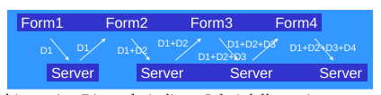
Approccio pesante!
Ora, invece abbiamo l'utilizzo di
- COOKIES: Salvati sul client, stato del client;
- SESSIONI: Salvati sul server, stato del server.
utilizzando le Servlet, mantengo lo stato nei seguenti modi:
Includo parametri GET nell'URL;
URL Rewriting: Riscrivo i parametri man mano che l'utente va avanti.
Field Form nascosti;
<INPUT Type="hidden">mi permette di nascondere i dati.Poco sicuro, cache dei motori di ricerca.
Cookeis con le Servet APIsession tracking tools.
Creati dal web browser, due tipi:
- Con scadenza: Hanno una data di scadenza oltre la quale non sono più validi.
- Senza scadenza: Alla chiusura del browser vengono eliminati.
Passano nell'HEADER delle richieste, vengono creati dal server.
Al cookie rimane il PATH e il TOKEN inviato dal server dopo che il browser ha fatto la richiesta.

session: Serie di interazioni tra client e web server
Tutto parte scambiandosi un token, che è un id di sessione.
Cookies
In andata:
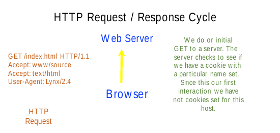
In ritorno:
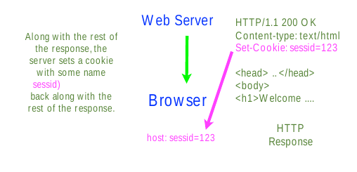
Io client lo memorizzo:
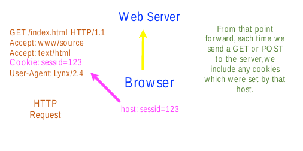
Ora ne può settare un altro:
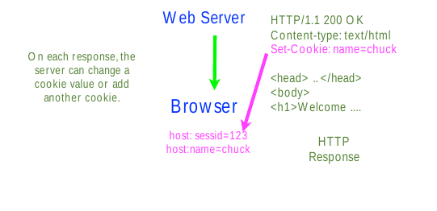

I cookie possono tracciare ciò che faccio e dove vado! Attraverso IFRAME o richieste multiple, posso salvare cookie particolari e ottenere una specie di storico di siti visitati, perdendo privacy.
Servlet Cookies API
javax.servlet.http.Cookie
Getter:
getName(),getValue(),getPath(),getDomain(),getMaxAge(),getSecure()...Setter
setValue(),setPath(),setDomain(),setMaxAge()...
Ottenere i cookies
Cookie[] HttpServletRequest.getCookies()
Aggiungere un cookie
HttpServletResponse.addCookie(Cookie cookie)


Session Management
La sessione si gestisce lato server:
Una sessione cattura la nozione di continua interazione tra server e client.
La session Management dovrebbe essere efficiente:
Il client non dovrebbe inviare lo shopping cart completo ogni volta che un prodotto è stato aggiunto!
Due meccanismi utilizzabili:
- Session Cookies
- URL Rewriting.
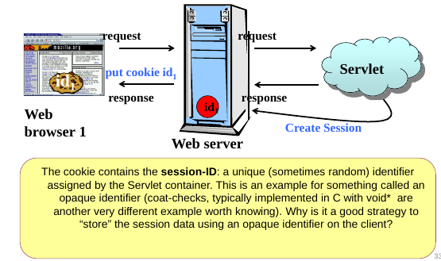

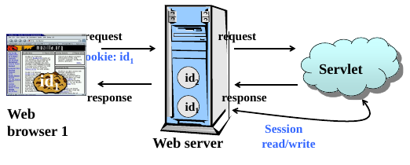
Le liste di sessioni (ID list) è disponibile solo sul server, mentre il cookies sono settate nel client side.

Questo però mi permette, avendo i cookie di qualcun altro, di entrare nella sua sessione!
Sì, però possiamo fare in modo che le altre pagine web non ottengano il nostro cookie.
Accedere ai dati di sessione
HttpServletRequest.getSession() accede all'object session. Se non ce n'è una viene creata.
per non crearla se non esistenteHttpServletRequest.getSession(false).
Le sessioni di solito scadono dopo x minuti arbitrari, generalmente 30.
Metodi HttpSession
I dati di sessione sono dentro una hash-table:
setAttribute(String name,Object value)Object getAttribute(String name)
Altri metodi abbastanza intuitivi:
getId()removeAttribute()Enumeration getAttributeName()isNew()getCreationTime()getLastAccessedTime()
Curiosità: Con i processori AMD posso avere un terabyte di ram per processore, mentre per gli Intel fino a 1.4 TB di ram.
Scadenza Sessioni
Ho un max-age che mi setta il massimo che può rimanere attiva la sessione.
Serverside session.invalidate() dopo il timeout di sessione.
xxxxxxxxxx51<web-app>2 <session-config>3 <session-timeout>10</session-timeout>4 </session-config>5</web-app>Dopo 10 minuti, la sessione scade.
Settabile e gettabile con:
session.setMaxInactiveInterval()
session.getMaxInactiveInterval()
Cookie di terze parti
Cookie che NON centrano con il sito visualizzato.
Ogni cookie è BLOCCABILE.
Cookies: rischi
I cookies possono creare rischi alla sicurezza, perchè ogni server può mettere i cookie non solo propri(cookie di terze parti) e può leggere cookies di ogni sito memorizzato.
Cosa succede se ho un computer condiviso?
- Cookie di più utenti nella stessa macchina!
Soluzioni
Uso session cookies, cioè cookies che funzionano SOLO in una determinata sessione.
Uso URL Rewriting: L'URL in GET ha un valore
sessID=IDdove salva l'ID di sessione.Ci permette l'utilizzo delle sessioni con i cookie disabilitati!
Il contatore del timeout session viene resettato ogni richiesta, se non faccio una richiesta entro tot minuti, allora perdo la sessione(timeout).
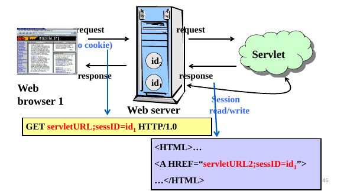
URL Rewriting: Servlet
String HttpServletResponse.encodeURL(String url)Hyperlink HTMLString HttpServletResponse.encodeRedirectURL(String url)HTTP Redirections
Questo mi permette di vedere se la sessione ha senso venga codificata nell'URL, cioè se ho un session cookie, l'URL rimane senza modifiche, mentre se non trova un cookie, lo mette.
Qualche server implementa entrambi in modo identico.
Request Dispatcher
Come chiamare dal server un'altra risorsa del server.
getServletContext().getRequestDispatcher("x"), richiedo la risorsa x.
RequestDispatcher è un object usato per inviare una richiesta a qualsiasi altra risorsa del server.
La risorsa può essere dinamica o statica.
Metodi
void forward(ServletRequest request,ServletResponse response)inoltra la richiesta da un servlet ad un'altra richiesta. È importante non scrivere il contenuto della richiesta se faccio ciò.void include(ServletRequest request, ServletResponse response)Include il contenuto in una risorsa in risposta della servlet corrente(e forse dovrò scrivere il contneuto prima o poi)
Passare i dati
Ho tre modi diversi:
request.setAttribute("key", value);Dati utilizzabili solo per questa richiesta.session.setAttribute("key", value);Dati utilizzabili per più richieste, però nella stessa sessione.context.setAttribute("key", value);Dati utilizzabili in futuro per ogni client.
Session tracking remoto e locale
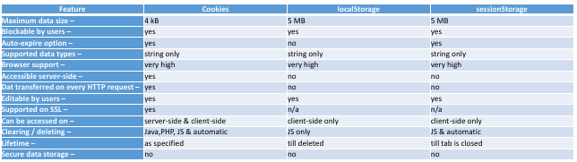
- Local storage: Storage locale interagibile solo con HTML5 e JS.
- Session Storage: Disponibile per la Browser session e la session storage è eliminata quando la sessione viene chiusa o il browser viene chiuso. Disponibile solo per browser con HTML5 come il local storage.
- I cookies sono accessibili ovunque.
I cookie ti consentono di memorizzare le stringhe. Sessione e Archiviazione locale consentono di memorizzare le primitive JavaScript (tipo di dati), ma non gli oggetti o gli array. Storage di sessione consente di archiviare qualsiasi tipo di oggetti supportati tramite il linguaggio di programmazione o il framework di Server Side.
Archiviazione locale e archiviazione sessione (web storage) sono nuove API e sono quasi gli stessi (sia in API che in capacità) con l'unico singola eccezione di persistenza. L'archiviazione della sessione è disponibile solo per durata della sessione del browser (apertura e chiusura) e viene cancellata quando la scheda o la finestra è chiusa.
Tutti e tre i metodi sono utilizzati per salvare i dati nella zona clientside, hanno la propria capacità e la propria expiration date.
Local storage e Session storage sono i migliori per dati non protetti (dati con informazioni normali come nome, genere), ad esempio, punteggi in quiz e giochi.
I cookies sono migliori per l'autenticazione e il mantenimento della sessione
I cookie consentono solo di memorizzare solo 4 KB di dati mentre lo storage Web (sia locale che di sessione) fornisce circa 10 MB di spazio per i dati da memorizzare.
Ricordiamo che essendo stateless, alla chiusura del browser senza queste funzioni perderemmo i dati.
I dati di sessione sono controllati dall'applicazione server side in modo assoluto.
Lo svantaggio è che il server deve dare potenza e memoria per gestire questi dati, tra il quale inviare i dati quando il client lo richiede ad ogni richiesta. Il server deve supporre anche l'eliminazione dei dati da parte del client.
localStorage, sessionStorage e cookie sono tutti soggetti a regole "same-origin", il che significa che i browser dovrebbero impedire l'accesso ai dati tranne il dominio che imposta le informazioni con cui iniziare.
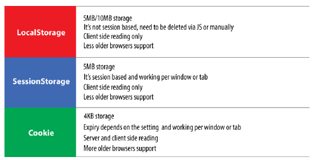


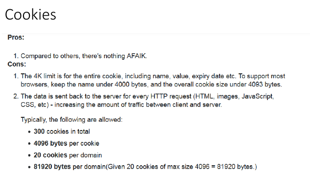
I limiti sono consigliati, MOLTE volte i browser mettono limiti propri e cambia da desktop a mobile.
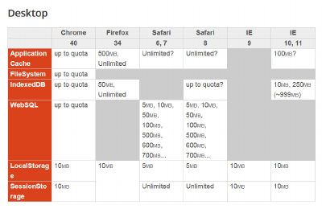
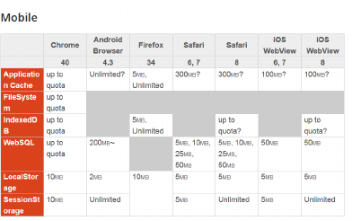
Filtri
Un filtro è un oggetto che trasforma una request o modifica una response.
Ci sono preprocessori che gestiscono il tutto prima che raggiunga la servlet e postprocessori che modificano la response appena uscito dalla servlet.
Schema di funzionamento
Filtro in ingresso
- Il client invia una richiesta al server e il filtro la intercetta
- Il filtro preprocessa la richiesta, raccogliendo eventuali informazioni
- Il filtro richiama il metodo chain.doFilter (lo vedremo meglio dopo) per invocare la prossima servlet o il webcomponent
- Il webcomponent invocato genera la risposta.

Filtro in uscita
- Il client invia una richiesta al server e il filtro la intercetta.
- Il filtro richiama il metodo
chain.doFilter. - Il web component corrispondente risponde, generando la risposta.
- La risposta viene intercetta dal filtro e viene processata.
- La risposta eventualmente modificata viene restituita al client.

Schema logico
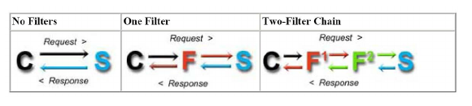
Ipotesi di utilizzo
- In particolare l'applicazione pratica che noi vedremo sarà un esempio di filtro di autenticazione, ossia il nostro filtro fornirà un forma di protezione da tentativi di accesso non autorizzato a certe risorse sul webserver.
- Altri esempi di possibile filtro: una filtro che effettua del logging con informazioni riguardo al client oppure ai tempi di elaborazione delle pagine oppure un filtro di compressione dati.
26/03/2019 - Laboratorio
Seguo slide
01/04/2019
Ci servirà solo la prima servletlistener
Listener
Un listener è un event hanlder che il server invoca quando un determinato evento avviene.
In termini di design: Observer pattern.
Un osservatore(in questo caso il listener) è avvisato di quando l'evento avviene nel server.
Usi tipici:
DB management;
Se non uso un listener, ogni utente dovrà connettersi al DB! Questo crea un rallentamento da parte dell'utente e da parte del server!
Connection Pool: Istanzia N connessioni al DB(Facendo partire N thread), ogni volta che arriva una richiesta si connette con un thread al Servizio DB. Ci riconnette al DB in qualsiasi situazione, incluso il timeout(Session Timeout dal server SQL).
Dependencies Management;
Monitoring.
Poichè dopo un po' il sito "scade", utilizzo un JS per tenere viva la connessione, rinnovando il cookie. Il servizio keep-alive prende un sacco di ram server-side e client-side.
Tipi di listerner:
ServletContextListenerweb app inizializzata/ spegnimentoServletRequestListenerRequest hanlder start/stopHTTPSessionListenersession creata/invalidataServletContextAttributeListenercontext attribute aggunto,rimosso, replicatoHttpSessionAttributeListenersession attribute aggiunto, rimosso, replicato
Per usare un listener devo implementare l'appropriata interfaccia e registri nel deployment descriptor.
Database nelle App Web
Tipi di database
- SQL: Database Relazionali
- NoSQL: Not Only SQL
I dati variano da semplici messaggi di testo a file video ad alta risoluzione. Il tradizionale RDBMS non è in grado di far fronte alla velocità, al volume e alla varietà dei dati richiesti da questa nuova era. Sono dunque nati i NoSQL(Che sono pure open source).
Database SQL
Nel corso di DB.
MariaDB:
- Se crasha MariaDB: Devo ricontrollare gli indici! (Non sono operazioni da poco.)
- Posso suddividere le tabelle grandi in tabelle più piccole uguali per avere accesso più veloce.
- Subquery aggiunte dopo.
PostgreeSQL:
- Se crasha PostgreeSQL: Risale con gli indici giusti.
- Possibilità di subquery e vettori.
MSSQL:
- Gratis per poche grandezze;
- MONOTHREAD, grande problema.
SQLLite:
- Comodo, versione più leggera di SQL, ha meno comandi
ALTER, salvato in un singolo file; - Non ho controllo del tipo;
- Passa comunque per un accesso ad un file(più lento).
La gente utilizza i software con licenza perchè ho meno responsabilità, perchè pago una licenza, dunque se succede un problema non sono pieno di problemi perchè la patch di sicurezza da applicare al software non è a carico mio come un OpenSource.
Da sapere la differenza del timestamp e data. Attenti al fuso orario.
Inserire sempre il timestamp nelle tabelle! Stare attenti al server che l'orario del server sia giusto. Oltretutto, devo stare attento alla codifica del DB stesso.
Database NoSQL
Le caratteristiche di base dei database NoSQL sono:
- Senza uno schema;
- Distribuiti e scalabili orizzontalmente;
- Hardware commodity: È un termine per dispositivi a prezzi accessibili che sono generalmente compatibili con altri dispositivi di questo tipo. In un processo chiamato commodity computing o commodity computing computing, questi dispositivi sono spesso collegati in rete per fornire maggiore potenza di elaborazione quando coloro che li possiedono non possono permettersi di acquistare più elaborati supercomputer, o vogliono massimizzare i risparmi nella progettazione IT.
I database NoSQL offrono tante funzioni per risolvere i problemi che il DB SQL Relazionale aveva per archiviare i dati non strutturati (il cosidetto blob).
Schemi dinamici
I database NoSQL consentono allo schema di essere flessibilie, con nuove colonne aggiungibili in qualsiasi momento.
Le richè possono o non possono avere valori per colonne e non ho applicazione rigida per i tipi delle colonne.
Ho più flessiblità ai cambiamenti!
Varietà dei dati
I database NoSQL supportano qualsiasi dato.
Supportano dati strutturati, semi-strutturati e non strutturati da memorizzare. Supporta log, file di immagini, video, grafici, jpegs, JSON, XML da memorizzare e utilizzare così come sono senza alcuna pre-elaborazione.Riducono quindi la necessità di ETL (abbreviazione di Extract -Transform - Load).
Cluster ad alta Avaliability
I database NoSQL supportano storage distribuito!
Ho anche scalabilità orizzontale.

Attenzione, non è LOAD BALANCING, se un server va offline, l'altro, con arp, fa finta di essere il server primario cambiando il proprio mac address.
Open Source
I DB sono OpenSource! Posso inoltre modificare il codice del DBMS NoSQL, senza problemi sulla licenza indipendentemente dall'uso.
Non dipendenza da SQL
I database SQL non dipendono solo da SQL per recuperare i dati, anzi permettono un accesso CRUD:
- Create
- Read
- Update
- Delete
Anche dette API.
Permettono anche accesso DML(Data manipulation language).
Tipi di NoSQL
Esistono quattro tipi di basi di dati NoSQL.
- database di valori-chiave (key value)
- database orientato alle colonne (column oriented)
- database orientati ai documenti (document oriented)
- database Graph.
Non ho :
- Join
- Non ho indici modifiicabili(li gestisce il DBMS Automaticamente)
Posso avere più Database dentro al database (Inception)
Questa gerarchia è comune a tutti i database NoSQL, ma le terminologie potrebbero variare.
Key-Value data model
- La tabella contiene molti spazi chiave e ogni spazio chiave può avere molti identificatori per memorizzare coppie di valori chiave.
- Lo spazio-chiave è simile alla colonna nel tipico RDBMS e il gruppo di identificatori presentato sotto lo spazio-chiave può essere considerato come righe.
- È adatto per la costruzione di applicazioni semplici, non complesse e disponibili. Poiché la maggior parte dei database di valori chiave supportano nell'archiviazione della memoria, possono essere utilizzati per creare un meccanismo di cache.

Column Oriented
- Database basati su colonne sono sviluppati sulla base del whitepaper di Big Table pubblicato da Google. Ciò richiede un approccio diverso rispetto al tradizionale RDBMS, in cui supporta l'aggiunta di un numero sempre maggiore di colonne e una tabella più ampia.
- Dal momento che la tabella sarà molto ampia, supporta il raggruppamento della colonna con un nome di famiglia, denominandola "Famiglia di colonne" o "Super colonna". La famiglia di colonne può anche essere facoltativa in alcune basi di dati della colonna.
- Secondo la filosofia comune dei database NoSQL, i valori delle colonne possono essere distribuiti in modo spartano. (Utile per avere integrazione di più sistemi di più linguaggi diversi!)
- La tabella contiene famiglie di colonne (facoltativo). Ogni famiglia di colonne contiene molte colonne. I valori per le colonne potrebbero essere scarsamente distribuiti con coppie chiave-valore.I database orientati alle colonne sono alternativi ai database di Data warehousing tipici e sono adatti per il tipo di applicazione OLAP.
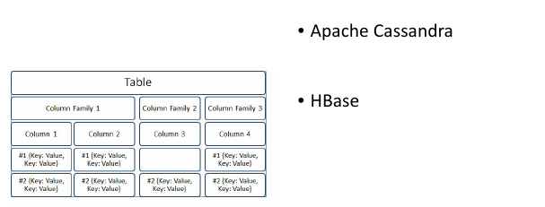
Document Oriented
I database orientati ai documenti offrono supporto per la memorizzazione di dati semi-strutturati. Può essere JSON, XML, YAML o persino un documento di Word. L'unità di dati è chiamata documento (simile a una riga in RDBMS). La tabella contiene documenti ed è chiamata raccolta(collection).
Il database contiene molte raccolte.
Una raccolta contiene molti documenti.
- Ogni documento può contenere un documento JSON o un documento XML o YAML o anche un documento Word.
I database di documenti sono adatti per applicazioni basate su Web e applicazioni che espongono servizi RESTful.
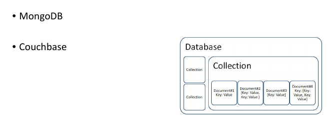
Graph Database
Database gestito a grafo: Contiene nodi e vertici, I database di grafici ci consentono di memorizzare ed eseguire operazioni di manipolazione dei dati su nodi, relazioni e attributi di nodi e relazioni.
I database di grafi funzionano meglio quando i grafi sono grafi diretti, cioè quando vi sono relazioni tra grafi.
Ogni grafo è simile ad una tabella, ho :
- Nodo;
- Proprietà di esso;
- Relazioni;
- Proprietà di esse.
Adatti per i social media.

Problemi NoSQL
no ACID transactions:
La maggior parte dei database NoSQL non supporta le transazioni ACID. Per esempio:
MongoDB(A quanto pare le supporta nelle ultime versioni), CouchBase, Cassandra.- Atomicità: Le transaction devono essere atomice in natura. (All or nothing rule). Se una parte della transaction non va, devo effettuare un rollback e annullare tutta la transazione.
- Consistenza: Il Database deve assicurare che solo i dati validi possono essere salvati. Questo dipende dal NoSQL che sto usando.
- Isolazione: Il database permette multiple transazioni in parallelo e le tiene isolate.
- Durabilità: Transazioni persistenti del DB.
API:
Alcuni NoSQL supportano solo API e non SQL.
Lee-Way of CAP Theorem:
Consistenza, Disponibilità e Partizionamento.
- Consistenza: Tutti i nodi devono essere dello stesso dato nello stesso tempo in un sistema distribuito.
- Disponibilità(Availiability): Deve essere in un High Avaliable System, cioè sempre disponibile.
- Partizionamento: Deve essere e rimanere operabile nonostante partitioning arbitrario creato da problemi di network.
Non sono rispettati tutti e tre, ne supportano generalmente solo due.
No JOIN:
Non tutti le supportano.
JDBC
Insieme di classi JAVA (Java Database Connectivity) in stile ODBC per interfacciarsi ai SQL databases.
Provide an object interface to relational database Based on the X/Open SQL CLI (Call Level Interface) X/Open C.
Standardizza l'accesso al DB attraverso JAVA.
Richiede che i drivers accettino una chiamata CLI e trasforma in chiamate native per l'accesso al db. CLI fornisce un driver manager che conversa con i driver attraverso un Service Provider Interface (SPI).

Architettura
Ti permette di scrivere DBMS-Indipendente.
Fornisce due interfacce:
- Interfaccia Applicativa
- Interfaccia Driver
Uso il driver Manager per caricare automaticamente il giusto driver JDBC e parlare al database corretto(MariaDB,Postgree...)
Jdbc:<subprotocol>:<domain name>
example jdbc:odbc://www.bob.com/MyJavaDB
Microsoft CLI ODBC
Microsoft’s ODBC Windows API standard for SQL is an extended version of the SAG CLI.
Controindicazioni
- specification è controllata da Microsoft
- ODBC drivers sono difficili da creare e mantenere.
- Crea molto overhead.
- Mai veloci come le API Native.(10%)
Transaction
Nelle transaction sono principalmente in autocommit mode.
Stored Procedure: supporto alle chiamate.
Schema classi Java
JDBC Core Interfaces
- Interfacce e classi i quali ogni driver JDBC driver deve implementare
Driver:
DriverManager: Gestisce i driver e le dispense di oggetti connection .
Driver: Quando un driver è caricato, crea una istanza di se stesso e la registra nel drivermanager.
DriverPropertyInfo: Fornisce variabili pubbliche che ti lasciano dinamicamente trovare le proprietà che quella connessione richiede.
Connection: Interfacce che forniscono un contesto per eseguire SQL Statements e processare i loro risultati
Statement: Interfacce che
- Statement: Esegue un SQL statement statico e ottieni i suoi risultati.
- PrepareStatement: Invia comandi precompilati in SQL, serve come container di query che eseguiamo più volte. Più veloce e più sicuro(anti SQL Inject)
- CallableStatement: Invia la procedura salvata usando la sintassi JDBC.
ResultSet: Interfacce di due tipi
- ResultSet: Fornisce i metodi per accedere al risultato di una query
- ResultSetMetaData: Fornisce metadata sul numero di colonne, tipi, proprietà di un resultSet.
Java language extensions
- Java language extensions per SQL.
Java utility extensions
estensione of java.util.Date
Utility: Classi che
Daterappresenta SQL DateTimerappresenta SQL TimeTimestamprappresenta SQL TImestamp
DatabaseMetaData: Interfacce che forniscono informazioni generali o di loro stesse sui metadati che puoi ottenere a runtime.
SQL metadata interfaces
- dynamically discover what SQL databases and JDBC drivers can do
Step di uso per DB
- Caricare il driver JDBC Appropriato;
- Richiedi connessione al DB;
- Invia la query SQL al DB;
- Processa il risultato.
Apache Derby
Integrato con JAVA EE 6
Due modalità:
- SERVER multiutente
- EMBEDDED monoutente.
Java DB Database (e' possibile scegliere tre modalita' diverse): Funzionamento come:
In memory DB (interamente in memoria, monoutente)
Server DB (server in ascolto su porta, multiutente)
Tre diverse modalita' noi sceglieremo quella normale
- Le altre due si riferiscono a connessioni che possono transitare come finto protocollo http per attraversare firewall
Local DB (server autoincluso nella VS applicazione: attenzione diventa MonoUtente)
02/04/2019 - Laboratorio
Seguo slide JDBC.